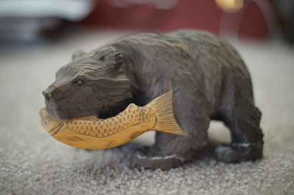

most of the flowers are gone now. this bush was having a grand old time though!
went to the thrift store and came out with a kibori kuma for $1.50. you can judge my judgement! wise or unwise, i now have my own dusty lil bear
i finished kuragehime and it was wonderful! i cant recommend this printing at all but the content is so good! meijiro sensei's reveal was stupid tho. wtf
the live action movie was on youtube so i skipped around through it and it was just terrible. im never watching humans again. it's too bad they just ended the anime like they did. no chance of more since they (badly) resolved the main conflict
if anyone reading this bought a fairyland doll in the past from the company, it kind of looks like theyre moving their store to a new site and leaving all the order info and accounts behind. seems like the site will disappear at the end of the year, but best to save the files before you forget! I logged back in to print a pdf of my ltf leah order so i wont lose that info. it's even just interesting to know how much i paid!
the fairyland site right now has her fullset with sleeping head for $445 and i paid $375 for the same set back in 2010. interesting...
while looking through my emails to find more invoices to save, i found the confirmation of my lieselotte in my closet room lottery entry! i didnt win ofc but it makes me happy to see that i wanted her enough 8 years ago to commit to paying 1k for her, even without an income. i feel so blessed to finally have one in my name (and hopefully soon in my arms!)
i do wanna get a dearSD but honestly i really like SD sized dolls so i'm not sure if im goin nuts or something. would i even like that size? I dont plan to get one unless volksusa does an online lottery for them anyway so not too much to worry about. i keep thinking about how i want to do an FCS someday but i think it'd just be an impulse? building your own doll sounds so fun though... maybe i'll find myself in love with an FCS only head and will have an excuse to do one. i wanna see more pics of f-98 when they're out. i dont know why i want my own name on that certificate so bad
i still have to find some nice eyes and shoes and wigs for uh.. all my dolls... should i stop myself from making all the girls blonde? can i stop myself? only time will tell.